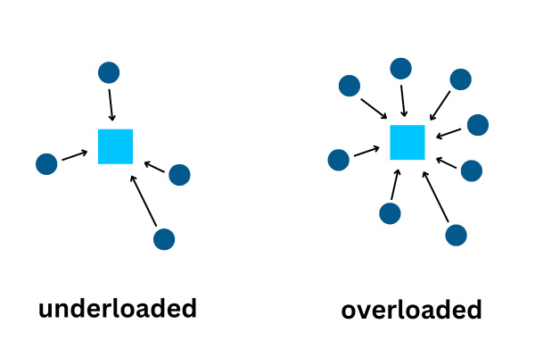

Data Visualization Project
For a summer project, I have done an internship with WaterApp Technologies Private Limited, an IoT-based company. I will give a general overview of the project and features here.
Product Background
WaterApp is a product aimed towards solving water management issues. It works using smart IoT based sensors that are installed in water tanks. These sensors send data to a app on your phone that gives alerts and messages regarding water level. It is a completely wireless system which means it's hastle free and it saves manpower costs by not requiring someone to climb on a tank to check the water level.
Product Architecture
Each WaterApp location consists of sensors, RTUs, and gateways. Sensors talk to RTUs which further relay information to gateways. Gateways then upload data to the cloud using sim cards. This data can be viewed on the app.
The Problem
Due to improper placement of gateways and RTUs in a site, a gateway might be talking to very few RTUs in a location which is inefficient or a gateway might be talking to too many RTUs in a location, leading it to get overloaded. Sometimes, RTUs might be talking to only one or two gateways, which means that there is a single point of failure. Rarely, RTUs might talk to gateways from different locations entirely, which is sub-optimal as that means the RTU can't reach the gateway that is present in its current location. These issues were hard to solve as there was no easy way to see how the nodes were communicating with each other.
The Idea
After brainstorming a bit, I figured that a neat way to solve this issue will be to create a graph/ chart that shows all the gateways and RTUs in a site and the communications taking place between them. This way, we get a clear visual understanding of all the nodes in a site and if there are any problems in them. It is an efficient way to view the health of a site. It is easy to use and understand which means it can be used by anyone with mminimal training.
The Chart
How it Works
This project was coded in JavaScript, using React. For the actual rendering of the chart, I have used the D3 library for JS.When the page loads for the first time, the code pulls data from a database in JSON form. This data contains a list of locations of all WaterApp sites. After the user selects a site from the locations list, a chart of all the RTUs and gateways loads, with lines between the nodes to indicate RTUs and gateways talking to each other.
Node Colours

There are five types of nodes. These are (left to right):
- RTUs (blue circle)
- gateway from current location (yellow square)
- gateway from outside location (orange square)
- gateway from current location not talking to anyone (red square)
- RTU not talking to anyone (red circle)
Line Style
There are two types of connections, direct and redirected. Redirected communication means that a RTU transmits data which doesn't reach a gateway but instead reaches a RTU, and that RTU re-transmits the original data to a gateway. This is not optimal as this means that a RTU can't reach a gateway directly. A direct connection means a RTU talks to a gateway directly.
Clicked

when a node is clicked, it highlights all the other nodes talking to it.
Additional Features
Refresh
When current readings are required, the refresh button can be pressed. The refresh button updates the local database with the current readings from the cloud.
In the left image, the data in the local database is older than 6 hours and the time filter is set to 6 hours. Due to this, no connections are shown. When refresh is called, the local database updates and recieves current data. Hence connections are seen.
Time Filter

(left) Filter set to 4h (right) Filter set to 2d
The time filter allows you to sort data by time. Only readings recieved a certain time before the data was collected will be displayed. On the left, only readings recieved in the last 4 hours are shown while on the right, readings are recieved in the last 2 days.
We can easily see some RTUs have talked to a Gateway in the last two days but not in the last four hours.
Asset Table

When a node is clicked, the table gives information about the node. The table has three coulumns. Location Name, Asset Name and Connected Nodes. Location name is useful for finding out which location off-site gateways are from. Asset Name helps to find out the actual name of the asset as finding a node by its unique id is hard to do. Connected nodes gives the asset name of all connected nodes.
Min RTU Connections toggle

Highlights nodes that are only talking to 1/2/3 other nodes. This is useful to find out vulnerabilities in the system.